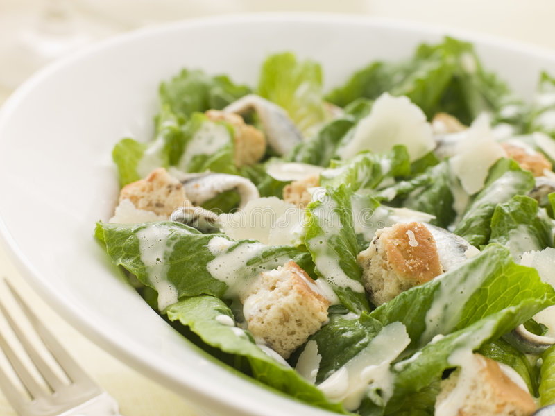

Casesar's salada

Ingredients
- 1 head romaine lettuce
- ¾ cup extra virgin olive oil
- 3 tablespoons red wine vinegar
- 1 teaspoon Worcestershire sauce
- ½ teaspoon salt
- ¼ tablespoon ground mustard
- 1 clove crushed garlic
- 1 egg
- 1 lemon, juiced
- freshly ground black pepper
- ¼ cup grated Parmesan cheese
- 1½ cups garlic croutons
- 1 (2 ounce) can anchovy filets
Directions
- Clean lettuce thoroughly and wrap in paper towels to absorb moisture. Refrigerate until crisp, at least 1 hour or more.
- In a bowl or jar combine oil, vinegar, Worcestershire sauce, salt, mustard, garlic and lemon juice. Whisk until well blended.
- Coddle egg by heating 3 cups of water to boiling. Drop in egg (still in shell) and let stand for 1 minute. Remove egg from water and let cool. Once cooled crack open and whisk egg into dressing. Whisk until thoroughly blended.
- Mash desired amount of anchovies and whisk them into the dressing. If desired set aside a few for garnish.
- To assemble, place torn lettuce leaves in a large bowl. Pour dressing over the top and toss lightly. Add the grated cheese, garlic croutons and freshly ground pepper, toss. Serve immediately!